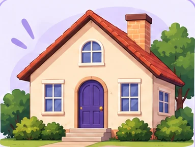
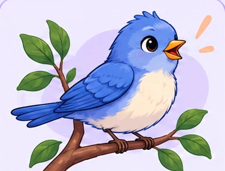
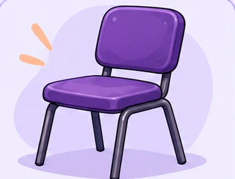
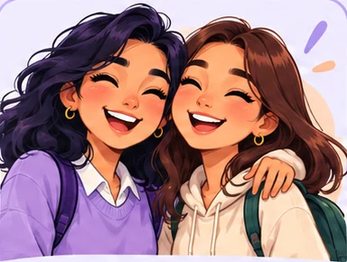
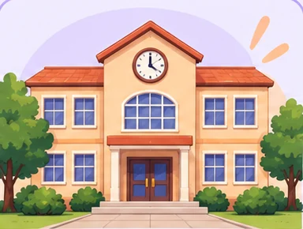
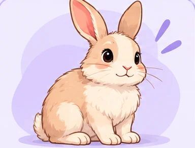
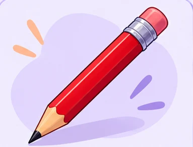

More Nouns.
Más sustantivos.
Ocho palabras nuevas para nombrar tu mundo. Reconócelas, organízalas y recuerda cómo se escriben.
24 respuestas + un reto personal · Sin registro
Antes de practicar
Mira, recuerda y empieza.
Más palabras, la misma idea.
Un noun nombra a una persona, un lugar, un animal o una cosa.
En a small rabbit, rabbit nombra al animal. Small describe su tamaño.
- Personas
- Lugares
- Animales
- Objetos
Tu práctica
0 / 24 respondidasUne la imagen con su nombre.
Elige una palabra del banco para cada imagen. Usa cada palabra una vez.







Organiza las palabras.
Elige el grupo al que pertenece cada noun. Al terminar, habrá dos palabras en cada grupo.
Ahora di las ocho palabras en voz alta.
¿Qué palabra nombra?
Toca un noun en cada frase. Las otras palabras pueden describirlo.
Recuerda sin mirar el banco.
Oculta los ejercicios anteriores y escribe el nombre de cada imagen en inglés. Pulsa «Comprobar» después de escribir.
Intenta recordar las palabras sin consultar el banco.
Paso a paso.
Completa las actividades. Puedes corregir tus respuestas y volver a intentarlo.
0 respuestas comprobadas
01 · student, house, bird, chair, friend, school, rabbit, pencil.
02 · Personas: student, friend. Lugares: school, house. Animales: bird, rabbit. Objetos: chair, pencil.
03 · rabbit, student, pencil, house.
04 · bird, chair, house, pencil.
Consultar esta clave no cambia tu puntuación.
Tu práctica y tu reto personal se guardan solo en este navegador, si el almacenamiento está disponible. No se envían al profesor.
Tus propios nouns.
Elige dos nouns y escribe una frase corta para cada uno. Añade una característica con red, blue, big o small.
Modelos: a blue pencil / a small bird. Si quieres, dibuja cada frase en una hoja.
Reto personal: no tiene corrección automática ni suma puntos. Comprueba que cada frase tenga un noun y una característica.
Necesito algunas ideas
a red chair · a big house · a blue pencil · a small bird